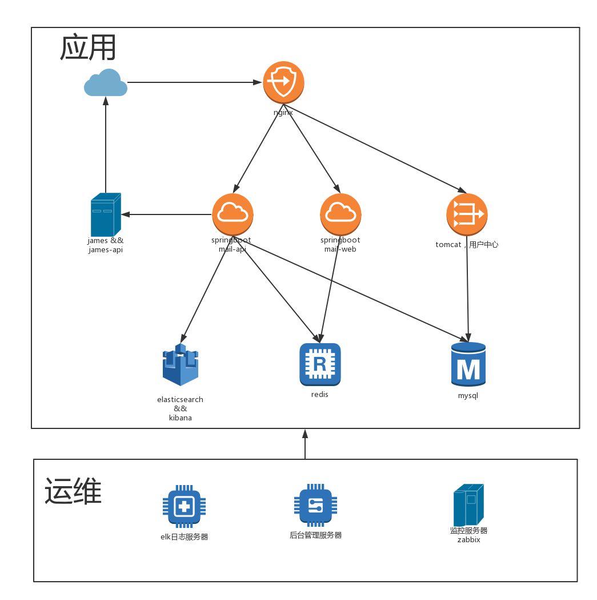
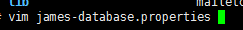
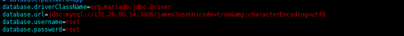
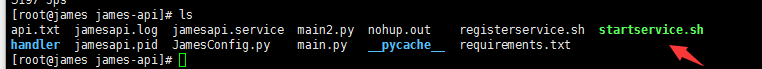
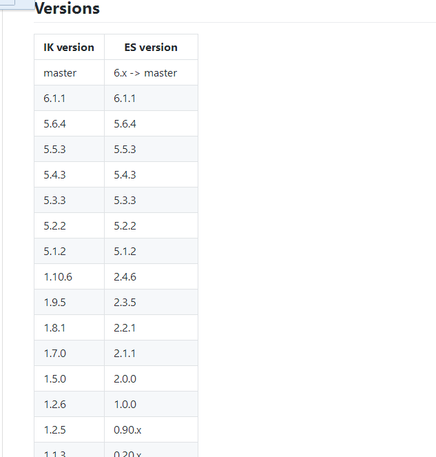
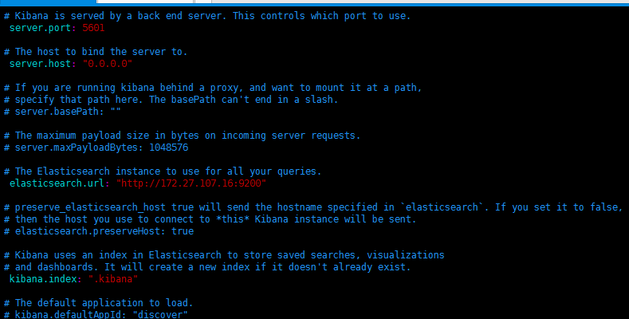
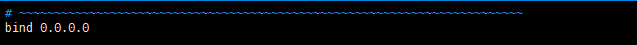

云邮部署说明书
|

|
序号 |
服务器 |
内网地址 |
外网地址 |
备注 |
配置 |
|
1 |
nginx |
172.26.80.10 |
需要 |
服务网关，需要上外网。 |
2cpu 2g内存 |
|
2 |
james&jamesapi |
172.26.80.16 |
需要 |
邮件服务器，需接入邮件防火墙 |
4cpu 8g内存 |
|
3 |
springboot
|
172.26.80.11 |
|
提供api服务 |
2cpu 4g内存 |
|
4 |
springboot |
172.26.80.12 |
|
提供web服务 |
2cpu 4g内存 |
|
5 |
tomcat，uncenter用户中心 |
172.26.80.13 |
|
验证 |
2cpu 4g内存 |
|
6 |
|
172.26.80.15 |
|
邮件存储内容，搜索使用。全文检索 |
8cpu 12g内存 |
|
7 |
redis |
172.26.80.17 |
|
存session |
4cpu 4g内存 |
|
8 |
mysql |
172.26.80.14 |
|
ucenter，api，james |
4cpu 8g内存 |
|
9 |
elk日志服务器 |
暂无 |
|
存放nginx日志，BI分析使用 |
0 |
|
10 |
后台管理服务器 |
暂无 |
|
更新，管理底层后台 |
0 |
|
11 |
监控服务器zabbix |
暂无 |
|
监控服务器 |
0 |
编译参数
configure arguments: --prefix=/usr/share/nginx --sbin-path=/usr/sbin/nginx --modules-path=/usr/lib64/nginx/modules --conf-path=/etc/nginx/nginx.conf --error-log-path=/var/log/nginx/error.log --http-log-path=/var/log/nginx/access.log --http-client-body-temp-path=/var/lib/nginx/tmp/client_body --http-proxy-temp-path=/var/lib/nginx/tmp/proxy --http-fastcgi-temp-path=/var/lib/nginx/tmp/fastcgi --http-uwsgi-temp-path=/var/lib/nginx/tmp/uwsgi --http-scgi-temp-path=/var/lib/nginx/tmp/scgi --pid-path=/var/run/nginx.pid --lock-path=/var/lock/subsys/nginx --user=nginx --group=nginx --with-file-aio --with-ipv6 --with-http_ssl_module --with-http_v2_module --with-http_realip_module --with-http_addition_module --with-http_xslt_module=dynamic --with-http_image_filter_module=dynamic --with-http_geoip_module=dynamic --with-http_sub_module --with-http_dav_module --with-http_flv_module --with-http_mp4_module --with-http_gunzip_module --with-http_gzip_static_module --with-http_random_index_module --with-http_secure_link_module --with-http_degradation_module --with-http_slice_module --with-http_stub_status_module --with-http_perl_module=dynamic --with-mail=dynamic --with-mail_ssl_module --with-pcre --with-pcre-jit --with-stream=dynamic --with-stream_ssl_module --with-debug --with-cc-opt='-O2 -g -pipe -Wall -Wp,-D_FORTIFY_SOURCE=2 -fexceptions -fstack-protector --param=ssp-buffer-size=4 -m64 -mtune=generic' --with-ld-opt=' -Wl,-E'
配置文件
#user nobody;
worker_processes 4;
error_log logs/error.log;
worker_rlimit_nofile 2048;
error_log logs/error.log notice;
error_log logs/error.log info;
pid logs/nginx.pid;
events {
worker_connections 2048;
multi_accept on;
use epoll;
}
http {
include mime.types;
default_type application/octet-stream;
fastcgi_connect_timeout 300;
fastcgi_send_timeout 300;
fastcgi_read_timeout 300;
fastcgi_buffers 512 64k;
#log_format main '$remote_addr - $remote_user [$time_local] "$request" '
# '$status $body_bytes_sent "$http_referer" '
# '"$http_user_agent" "$http_x_forwarded_for"';
#access_log logs/access.log main;
# log_format access '$flag' '$upstream_addr';
sendfile on;
#tcp_nopush on;
#keepalive_timeout 0;
keepalive_timeout 65;
port_in_redirect off;
client_body_buffer_size 128k;
client_max_body_size 100m;
client_header_buffer_size 128k;
large_client_header_buffers 4 128K;
proxy_buffering on;
#proxy_cache_purge on;
proxy_buffer_size 8k;
proxy_buffers 8 128K;
proxy_cache_path /var/nginx/cache levels=1:2 keys_zone=one:100m inactive=1d max_size=2G;
proxy_temp_path /var/nginx/tmp;
proxy_connect_timeout 60s;
upstream web {
server 1.1.1.1:8080 weight=5;
ip_hash;
}
#upstream zqht_sso {
# ip_hash;
# server 172.27.102.126:8080 weight=5;
# }
#upstream zqht_ids {
# ip_hash;
# server 172.27.102.107:8080 weight=5;
# }
#upstream zabbix {
# ip_hash;
# server 172.27.103.198:8080 weight=5;
# }
server {
listen 80;
server_name localhost;
#access_log /usr/local/nginx/logs/access1.log access;
#location ~* /(.*?)(/|$) {
# set $flag $1;
#if ($flag ~* (@uri|@uri)) {
# proxy_pass http://web;
#}
# proxy_set_header Host $host;
# proxy_set_header X-Real-IP $remote_addr;
# proxy_set_header X-Forwarded-For $proxy_add_x_forwarded_for;
#}
location ^~ /api/ {
proxy_set_header Host $host;
proxy_set_header X-Real-IP $remote_addr;
proxy_set_header X-Forwarded-For $proxy_add_x_forwarded_for;
proxy_pass http://172.26.80.11:8181;
proxy_intercept_errors on;
error_page 401 =302 /;
}
location ^~ /hapi/ {
proxy_set_header Host $host;
proxy_set_header X-Real-IP $remote_addr;
proxy_set_header X-Forwarded-For $proxy_add_x_forwarded_for;
# proxy_pass http://172.27.106.73:8181/;
proxy_pass http://172.26.80.11:8181/;
proxy_intercept_errors on;
error_page 401 =508 /;
}
location ^~ /enterprise {
# proxy_set_header Host $host;
# proxy_set_header X-Real-IP $remote_addr;
# proxy_set_header X-Forwarded-For $proxy_add_x_forwarded_for;
# proxy_pass http://172.27.107.16:8082/;
root /var/www;
try_files $uri $uri/ /enterprise/index.html;
}
location / {
proxy_set_header Host $host;
proxy_set_header X-Real-IP $remote_addr;
proxy_set_header X-Forwarded-For $proxy_add_x_forwarded_for;
proxy_pass http://172.26.80.12:8282;
}
location = /api/doc {
rewrite ^(.*) http://172.26.80.11:8181/;
}
#
error_page 401 500 502 503 504 /50x.html;
location = /50x.html {
root html;
}
}
# another virtual host using mix of IP-, name-, and port-based configuration
#
#server {
# listen 8000;
# listen somename:8080;
# server_name somename alias another.alias;
# location / {
# root html;
# index index.html index.htm;
# }
#}
# HTTPS server
#
#server {
# listen 443 ssl;
# server_name localhost;
# ssl_certificate cert.pem;
# ssl_certificate_key cert.key;
# ssl_session_cache shared:SSL:1m;
# ssl_session_timeout 5m;
# ssl_ciphers HIGH:!aNULL:!MD5;
# ssl_prefer_server_ciphers on;
# location / {
# root html;
# index index.html index.htm;
# }
#}
}
将jdk1.8上传到服务器并解压到/usr/local/jdk中，在/etc/profile中添加以下的话
JAVA_HOME=/usr/local/jdk
JRE_HOME=/usr/local/jdk/jre
CLASSPATH=$JAVA_HOME/lib:$JAVA_HOME/jre/lib
PATH=$PATH:$JAVA_HOME/bin
export PATH CLASSPATH JAVA_HOME
之后source /etc/profile来启用
检测，java -version
修改
写好数据库链接地址和密码

完毕
使用/root/startjames.sh启动
先要安装python3
wget --no-check-certificate https://www.python.org/ftp/python/3.5.0/Python-3.5.0.tgz
解压到当前目录：
tar -zxvf Python-3.5.0.tgz
cd Python-3.5.0
./configure --prefix=/usr/local/python3.5 --enable-shared
make & make install
ln -s /usr/local/python3.5/bin/python3 /usr/bin/python3
此时运行python3命令的话会报错，缺少.so文件，我们需要进行如下操作：
cp -R /usr/local/python3.5/lib/* /usr/lib64/
ok！此时python3的基础环境已经安装完成！
拷贝到服务器上，直接运行startservice.sh

略
server.port = 8181
spring.datasource.url = jdbc:mysql://172.26.80.14:3306/yunmail?useUnicode=true&characterEncoding=UTF-8
spring.datasource.username = root
spring.datasource.password = root
spring.datasource.driverClassName = com.mysql.jdbc.Driver
spring.session.timeout = 3600
# Specify the DBMS
#spring.jpa.database = tsme
# Show or not log for each sql query
spring.jpa.show-sql = true
# Hibernate ddl auto (create, create-drop, update)
#spring.jpa.hibernate.ddl-auto = update
# Naming strategy
#spring.jpa.hibernate.naming-strategy = com.qiyue.gaoji.model.HibernateNamingStrategy
# stripped before adding them to the entity manager)
spring.jpa.properties.hibernate.dialect = org.hibernate.dialect.MySQL5Dialect
#spring.mvc.static-path-pattern=/**
#spring.resources.static-locations=classpath:/static/,file:./upload/
mode.dev.enabled = true
spring.data.elasticsearch.cluster-name = yumail.dev
spring.data.elasticsearch.cluster-nodes = 172.26.80.15:9300
#spring.mvc.static-path-pattern=/**
#spring.resources.static-locations=classpath:/static/,file:./upload/
elearning.site.name = Troila Mail Web Service
elearning.site.version = 0.1
elearning.site.domain = http://api.mail.troila.com
elearning.site.production = false
spring.redis.database=12
spring.redis.host=172.26.80.17
spring.redis.port=6379
spring.redis.password=
spring.redis.pool.max-active=8
spring.redis.pool.max-wait=1
spring.redis.pool.max-idle=8
spring.redis.pool.min-idle=2
spring.redis.timeout=1000
# james settings section
james.server = 172.26.80.16
james.smtpPort = 25
james.smtpAuthRequired = true
james.smtpSslPort = 465
james.smtpSslEnabled = false
#james.pop3Port = 110
#james.pop3SslPort = 995
#james.pop3SslEnabled = false
#james.imapPort = 143
#james.imapSslPort = 993
#james.imapSslEnabled = false
#james.usedProtocol = imap
james.debug = true
james.recvPort = 143
james.recvSslEnabled = false
james.recvProtocol = imap
#james.recvProtocol = pop3
#james·þϱǷļ®µõrl"
james.commandUrl = http://172.26.80.16:8080/
#jamesͭ¼ԓõrl
james.addDomainUrl = adddomain?domain=
#jamesɾ³õrl
james.removeDomainUrl = removedomain?domain=
#jamesͭ¼ԓû§µõrl
james.addUserUrl = adduser?email={0}&password={1}
#jamesɾ³õrl
james.removeUserUrl = removeuser?email=
#jamesў¸Ń݂분url
james.setPasswordUrl = setpassword?email={0}&password={1}
sms.uid = 4T0GPpGx3CEN
sms.password = cxfzgu5q
sms.cid = EwS3hNJsJtAy
sms.url = http://api.weimi.cc/2/sms/send.html
sms.validMinute = 3
sms.cidDomain = EwS3hNJsJtAy
sms.domainInterval = 30
sms.domainLoop = 24
#\u6BCF\u589E\u52A0\u4E00\u4E2A\u7528\u6237\u7684\u4EF7\u683C
enlarge.oneUserPrice = 100
#\u6BCF\u589E\u52A01MB\u7684\u4EF7\u683C
enlarge.oneStoragePrice = 5
login.findAddressUrl = http://ip.taobao.com/service/getIpInfo.php?ip={0}
ucenter.host = http://172.26.80.13:8080/UCenter/s
ucenter.admin.username = admin
ucenter.admin.password = 123456
ucenter.yunmail.groupid = 40fda406f0524735bdacbbcda6e1cb17
spring.http.multipart.maxFileSize=50Mb
attachment.rootFolder = /var/data/troila/mail
#\u90AE\u4EF6\u6B63\u6587\u4E2D\u63BA\u5165\u7684\u56FE\u7247\u5927\u5C0F\u9650\u5236
attachment.mail.img.size.max = 1048576
attachment.mime[gif] = image/gif
attachment.mime[jpe] = image/jpeg
attachment.mime[jpg] = image/jpeg
attachment.mime[jpeg] = image/jpeg
attachment.mime[png] = image/png
attachment.mime[doc] = application/msword
attachment.mime[docx] = application/msword
attachment.mime[dot] = application/msword
attachment.mime[xls] = application/vnd.ms-excel
attachment.mime[xlsx] = application/vnd.ms-excel
attachment.mime[ppt] = application/vnd.ms-powerpoint
attachment.mime[pptx] = application/vnd.ms-powerpoint
attachment.mime[pdf] = application/pdf
attachment.mime[z] = application/x-compress
attachment.mime[tgz] = application/x-compressed
attachment.mime[gz] = application/x-gzip
attachment.mime[tar] = application/x-tar
attachment.mime[zip] = application/zip
attachment.mime[mp3] = application/mpeg
attachment.mime[mpeg] = application/mpeg
略
server.port = 8282
mail.api.server =
mail.my.server =
spring.redis.database=12
spring.redis.host=172.26.80.17
spring.redis.port=6379
spring.redis.password=
spring.redis.pool.max-active=8
spring.redis.pool.max-wait=1
spring.redis.pool.max-idle=8
spring.redis.pool.min-idle=2
spring.redis.timeout=1000
spring.freemarker.charset=UTF-8
spring.freemarker.settings.number_format=#
略
在tomcat根目录下
[root@ucenter tomcat]# cat UCenter.properties
#mybatis-config.xml在服务器的地址
config_dir = /usr/local/tomcat/UCenterConfig
#身份系统的地址，本项目的服务器地址
uCenterUrl = http://172.26.80.13:8080/UCenter/s
[root@ucenter tomcat]# cat UCenter.properties
#mybatis-config.xml在服务器的地址
config_dir = /usr/local/tomcat/UCenterConfig
#身份系统的地址，本项目的服务器地址
uCenterUrl = http://172.26.80.13:8080/UCenter/s
[root@ucenter tomcat]# cd UCenterConfig/
default.png mybatis-config.xml
[root@ucenter tomcat]# cat UCenterConfig/mybatis-config.xml
<?xml version="1.0" encoding="UTF-8"?>
<!DOCTYPE configuration PUBLIC "-//mybatis.org//DTD Config 3.0//EN" "http://mybatis.org/dtd/mybatis-3-config.dtd">
<configuration>
<!-- 属性配置 -->
<!-- <properties resource="classpath:db.properties"> -->
<!-- 参数设置 -->
<settings>
<!-- 这个配置使全局的映射器启用或禁用缓存 -->
<setting name="cacheEnabled" value="false" />
<!-- 全局启用或禁用延迟加载。当禁用时，所有关联对象都会即时加载 -->
<setting name="lazyLoadingEnabled" value="true" />
<!-- 当启用时，有延迟加载属性的对象在被调用时将会完全加载任意属性。否则，每种属性将会按需要加载 -->
<setting name="aggressiveLazyLoading" value="true" />
<!-- 允许或不允许多种结果集从一个单独的语句中返回（需要适合的驱动） -->
<setting name="multipleResultSetsEnabled" value="true" />
<!-- 使用列标签代替列名。不同的驱动在这方便表现不同。参考驱动文档或充分测试两种方法来决定所使用的驱动 -->
<setting name="useColumnLabel" value="true" />
<!-- 允许JDBC支持生成的键。需要适合的驱动。如果设置为true则这个设置强制生成的键被使用，尽管一些驱动拒绝兼容但仍然有效（比如Derby） -->
<setting name="useGeneratedKeys" value="true" />
<!-- 指定MyBatis如何自动映射列到字段/属性。PARTIAL只会自动映射简单，没有嵌套的结果。FULL会自动映射任意复杂的结果（嵌套的或其他情况） -->
<setting name="autoMappingBehavior" value="PARTIAL" />
<!-- 配置默认的执行器。SIMPLE执行器没有什么特别之处。REUSE执行器重用预处理语句。BATCH执行器重用语句和批量更新 -->
<setting name="defaultExecutorType" value="SIMPLE" />
<!-- 设置超时时间，它决定驱动等待一个数据库响应的时间 -->
<setting name="defaultStatementTimeout" value="25000" />
</settings>
<environments default="development">
<environment id="development">
<transactionManager type="JDBC" />
<dataSource type="POOLED">
<property name="driver" value="org.mariadb.jdbc.Driver" />
<property name="url" value="jdbc:mysql://172.26.80.14:3306/ucenter?useUnicode=true&characterEncoding=utf8" />
<property name="username" value="root" />
<property name="password" value="root" />
<property name="poolMaximumActiveConnections" value="20" />
<property name="poolMaximumIdleConnections" value="5" />
<property name="poolMaximumCheckoutTime" value="20000" />
<property name="poolTimeToWait" value="20000" />
<property name="poolPingQuery" value="SELECT NOW()" />
<property name="poolPingEnabled" value="true" />
<property name="poolPingConnectionsNotUsedFor" value="19000" />
</dataSource>
</environment>
</environments>
<mappers>
<mapper resource="com/troila/mappers/base/UserMapper.xml" />
<mapper resource="com/troila/mappers/base/UserGroupMapper.xml" />
<mapper resource="com/troila/mappers/ext/UserGroupMapperExt.xml" />
<mapper resource="com/troila/mappers/base/TokenMapper.xml" />
</mappers>
</configuration>
略
配置ElasticSearch：
tar -zxvf elasticsearch-2.1.0.tar.gz cd elasticsearch-2.1.0
修改配置文件
[root@mailelasticsearch config]# cat elasticsearch.yml | egrep -v '^#'
cluster.name: yumail.dev
path.data: /var/data/troila
network.host: 0.0.0.0
ES_JAVA_OPTS="-Des.insecure.allow.root=true"
./bin/elasticsearch
1.download or compile
optional 1 - download pre-build package from here: https://github.com/medcl/elasticsearch-analysis-ik/releases
unzip plugin to folder your-es-root/plugins/
optional 2 - use elasticsearch-plugin to install ( version > v5.5.1 ):
./bin/elasticsearch-plugin install https://github.com/medcl/elasticsearch-analysis-ik/releases/download/v6.0.0/elasticsearch-analysis-ik-6.0.0.zip
2.restart elasticsearch
安装中文分词器ik
https://github.com/medcl/elasticsearch-analysis-ik

查找对应版本
用plugln安装
./plugin install https://github.com/medcl/elasticsearch-analysis-ik/releases/download/v1.10.6/elasticsearch-analysis-ik-1.10.6.zip
kibana
解压后
开启配置文件 yml

开启4个注释并更改

Yum install redis
bind 0.0.0.0
protected-mode yes
port 6379
tcp-backlog 511
timeout 0
tcp-keepalive 300
daemonize yes
supervised no
pidfile /var/run/redis_6379.pid
loglevel notice
logfile /var/log/redis_6379.log
databases 16
save 900 1
save 300 10
save 60 10000
stop-writes-on-bgsave-error yes
rdbcompression yes
rdbchecksum yes
dbfilename dump.rdb
dir /var/lib/redis/6379
slave-serve-stale-data yes
slave-read-only yes
repl-diskless-sync no
repl-diskless-sync-delay 5
repl-disable-tcp-nodelay no
slave-priority 100
appendonly no
appendfilename "appendonly.aof"
appendfsync everysec
no-appendfsync-on-rewrite no
auto-aof-rewrite-percentage 100
auto-aof-rewrite-min-size 64mb
aof-load-truncated yes
lua-time-limit 5000
slowlog-log-slower-than 10000
slowlog-max-len 128
latency-monitor-threshold 0
notify-keyspace-events ""
hash-max-ziplist-entries 512
hash-max-ziplist-value 64
list-max-ziplist-size -2
list-compress-depth 0
set-max-intset-entries 512
zset-max-ziplist-entries 128
zset-max-ziplist-value 64
hll-sparse-max-bytes 3000
activerehashing yes
client-output-buffer-limit normal 0 0 0
client-output-buffer-limit slave 256mb 64mb 60
client-output-buffer-limit pubsub 32mb 8mb 60
hz 10
aof-rewrite-incremental-fsync yes
Yum install mysql-server mysql
配置
[root@mysql ~]# cat /etc/my.cnf |egrep -v '^#'
[mysqld]
datadir=/var/lib/mysql
socket=/var/lib/mysql/mysql.sock
user=mysql
symbolic-links=0
max_allowed_packet=500M
[mysqld_safe]
log-error=/var/log/mysqld.log
pid-file=/var/run/mysqld/mysqld.pid